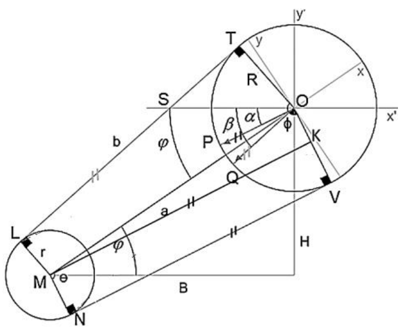

Ingeniero Mecánico
Obtuve mi título profesional de ingeniero mecánico mediante el trabajo de tesis titulado: “Desarrollo e implementación de una aplicación computacional para el cálculo de componentes de sistemas de transmisión de potencia utilizando métodos de elementos finitos y analíticos”, el cual fue aprobado por unanimidad.
A continuación se detallan las principales diferencias respecto a tesis similares:
Digitalización de diagramas
\[ \large x_{n_{a,b}} = \frac{x_{n_{b,a}} - x_{1_{b,a}}}{x_{2_{b,a}} - x_{1_{b,a}}}(x_{2_{a,b}} - x_{1_{a,b}}) + x_{1_{a,b}} \]
\[ \large y_{n_{a,b}} = \frac{y_{n_{b,a}} - y_{1_{b,a}}}{y_{2_{b,a}} - y_{1_{b,a}}}(y_{2_{a,b}} - y_{1_{a,b}}) + y_{1_{a,b}} \]
Configuración geométrica de la transmisión

\[\large \phi = \arccos\left(\frac{R - r}{a}\right) \quad \varphi = \arccos\left(\frac{B}{a}\right)\]
\[\large \beta = 90 + \varphi - \phi \quad \quad \alpha = 2\varphi - \beta\]
Dependiendo del sentido de giro del motor, las fuerzas en los ejes X y Y se cálculan con las siguientes igualdades, dependiendo del sentido del motor:
\[ \large \text{Antihorario:} \quad \begin{array}{l} F_{x'} = F_{\max}\cos(\beta) + F_{\min}\cos(\alpha) \\ F_{y'} = F_{\max}\sin(\beta) + F_{\min}\sin(\alpha) \end{array} \]
\[ \large \text{Horario:} \quad \quad \quad \begin{array}{l} F_{x'} = F_{\min}\cos(\beta) + F_{\max}\cos(\alpha) \\ F_{y'} = F_{\min}\sin(\beta) + F_{\max}\sin(\alpha) \end{array} \]
Ejes de transmisión huecos
Área \[A = \pi (R^2 - r^2)\]
Momento polar de inercia \[\large J = \frac{\pi (R^4 - r^4)}{2}\]
Primer momento de área \[\large I = \frac{\pi (R^4 - r^4)}{4}\]
Segundo momento de área \[\large Q = \frac{2(R^3 - r^3) \sin ^3\alpha}{3}\]
Espesor \[t = 2(R - r)\sin \alpha\]
Cálculo general de ejes de transmisión
Fuerzas cortantes:
\[ \large V_k(x) = - \sum_{i=1}^k F_i - w_i(x - x_i) - \sum_{i=1}^k w_{i-1}(x_i - x_{i-1}) \]
Momentos flectores:
\[ \large M_k(x) = -x\sum_{i=1}^k F_i - \frac{1}{2}w_i(x - x_i)^2 - x\sum_{i=1}^k w_{i-1}(x_i - x_{i-1}) + C_{1_i} + M_i \]
Deformaciones angulares:
\[ \large \theta_k(x) = \frac{- \frac{x^2}{2}\sum_{i=1}^k F_i - \frac{1}{6}w_i(x - x_i)^3 - \frac{x^2}{2}\sum_{i=1}^k w_{i-1}(x_i - x_{i-1}) + C_{1_i}x + M_ix + C_{2_i}}{E_iI_i} \]
Deformaciones lineales:
\[ \large y_k(x) = \frac{- \frac{x^3}{6}\sum_{i=1}^k F_i - \frac{1}{24}w_i(x - x_i)^4 - \frac{x^3}{6}\sum_{i=1}^k w_{i-1}(x_i - x_{i-1}) + \frac{C_{1_i}x^2}{2} + \frac{M_ix^2}{2} + C_{2_i}x + C_{3_i}}{E_iI_i} \]
Fuerzas cortantes en ejes de transmisión
En el analisis de rigidez y de vibraciones
\[ \large k = \frac{EI}{L^3(1 + \varphi)} \left[ \begin{array}{cccc} 12 & 6L & -12 & 6L \\ 6L & (4 + \varphi)L^2 & -6L & (2 - \varphi)L^2 \\ -12 & -6L & 12 & -6L \\ 6L & (2 - \varphi)L^2 & -6L & (4 + \varphi)L^2 \end{array} \right] \]
\[ \large \varphi = \frac{12EI}{K_sAGL^2} \]
\[ \large K_S = \frac{6(1 + \nu)(1 + m^2)^2}{(7 + 6\nu)(1 + m^2)^2 + (20 + 12\nu)m^2} \to m = \frac{r}{R} \quad \text{y} \quad \nu = 0.3 \]
En el analisis estático y dinámico
\[ \large \tau_{\text{cortante}} = \frac{FQ}{It} \]
\[ \large \tau_{\text{medio cortante}} = \frac{2(R^2 + Rr + r^2)(F_y + F_z)}{3\pi(R^4 - r^4)} \]
\[ \large \tau_{\text{alternante cortante}} = \frac{2(R^2 + Rr + r^2)|F_y - F_z|}{3\pi(R^4 - r^4)} \]
Elementos de mayor estres en el eje de transmisión
\[ \large \sigma_{yz} = \frac{4R(M_y\sin \beta + M_z\cos \beta)}{\pi(R^4 - r^4)} \]
\[ \large \beta = \arctan\frac{M_y}{M_z} \]
Vibraciones en ejes de transmisión
\[ \large \text{Límite inferior:}\quad \text{RPM} = \frac{30}{\pi}\sqrt{\frac{g}{\max(\delta_R)}} \]
\[ \large \text{Límite superior:}\quad \text{RPM} = \frac{30}{\pi}\sqrt{g\frac{\sum_{i=1}^T \rho_i A_i \int y_i dx}{\sum_{i=1}^T \rho_i A_i \int y_i^2 dx}} \]
Analisis de elementos bidimensionales de transmisión mediante elementos finitos
\[\large [F]=[K][d] → [\sigma_x, \sigma_y, \tau_{xy}]\]